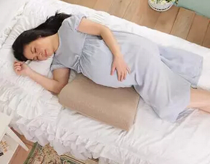

【孕妈警惕】这些生活习惯会加重孕妇头晕，你该懂的……
妊娠期间，随着胎儿一天天长大，孕妇容易感觉到头重脚轻甚至头晕等症状。女性怀孕后，身体的血液会增加百分之三十，有些人甚至增多百分之五十，于是心血管系统的压力会越来越大，心率也加快了很多，这时候阻力就会降低，血管会扩张，这时候容易发生孕妇头晕症状。
快速站起
孕妇坐着时，血液集中在腿部，如果过快站起的话，血液来不及流入心脏，就会迅速下降血压导致孕妇头晕。孕妇怀孕后，要改掉坐着就快速起身的习惯，养成缓缓站起的习惯，如果站立的时间比较长，那么要穿凿弹力较好的袜子，并多活动腿部，促进血液循环。
长时间仰卧
有些孕妇休息的时候习惯仰卧位，随着胎儿渐渐长大，子宫越来越大，长时间仰卧会导致子宫压迫到腿部血液回流到心脏的静脉，从而减少血液回流瞬间降低孕妇的血压导致头晕。孕妇平时休息采用左侧卧是最好的姿势，不仅可以纠正子宫的位置还可以预防孕妇头晕症状。
饭量太小，饮水不足
有些孕妇由于怀孕初期的妊娠反应导致食欲降低，而有些孕妇则是担心怀孕期间吃太多会容易长胖，于是在怀孕期间饭量减少，从而引发低血糖，低血糖会让孕妇产生头晕、心慌、疲劳的感觉。怀孕期间的各种妊娠反应容易导致孕妇脱水，所以孕妇要比正常的女性多喝水，防止体内缺水而引发孕妇头晕。
为了避免出现饭量小，饮水少导致的孕妇头晕症状，准妈妈要养成少吃多餐的习惯，饿了可以吃点适合孕妇的零食垫垫胃，每天要养成喝八杯水的习惯。
室温过高
室温过高或者淋浴的水温过高都会扩张血管，降低血压，从而引发孕妇头晕。孕妇平时如果感觉到室温过高，有了晕眩的感觉，一定要及时打开门窗透透气，平时淋浴宜采用近体温的水温，淋浴的时间在十分钟左右。平时孕妇要穿着容易穿脱的棉质衣服，这样可以随着气温变化增减衣服。
孕妇缺铁性贫血
孕妇容易在妊娠期期间缺铁性贫血，贫血容易引发大脑供氧不足而产生孕妇头晕症状。孕期要多吃一些补铁的食物，避免缺铁而导致孕妇头晕。
呼吸过快过深，即换气过度
人体由于运动过度，呼吸过快或者深度呼吸都会流失血液中的二氧化碳，这样会容易导致头晕。我们提倡孕妇在孕期多参加户外活动，但是在运动的过程中如果感觉到疲劳应该要停止运动，并且躺下来休息。

咳嗽、小便、大便过于用力
有些孕妇平时咳嗽会比较用力，大便、小便的时候，也是会用力过猛，这样的行为容易引发血管迷走神经反应，降低心率和血压，进而引发孕妇头晕症状。此外怀孕期间缺水、心情过度焦虑也会产生血管迷走神经反应，伴随出现脸色惨白、食欲降低、嗜睡、头晕头疼等症状。
怀孕期间，只要感觉到头晕，就要马上停下手中的活躺下来休息，没有条件躺下的也要尽量坐下来休息，并用双膝抱头。孕妇头晕的时候，要停止开车、工作等，避免在这过程中晕倒。躺下休息的时候尽量采取侧卧位，因为侧卧可以促进血液流进心脏，从而促进血液流入大脑和胎盘，防止预防晕倒，且可以缓解头晕症状。